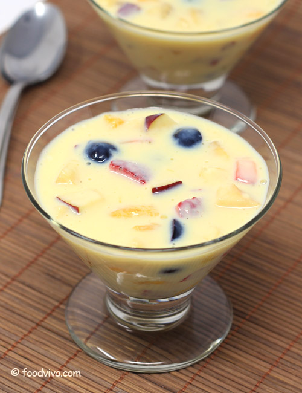

Fruit Salad Custard

Description
This sweet and fruity salad is sure to bring a smile to everyone
on the dining table after a hearty meal.
Ingredients:
- An apple chopped into small square chunks.
- An orange chopped into halved quarters.
- A fistful of blueberries.
- 3 strawberries cut into thin slices.
- 200mL of liquid custard.
Steps: